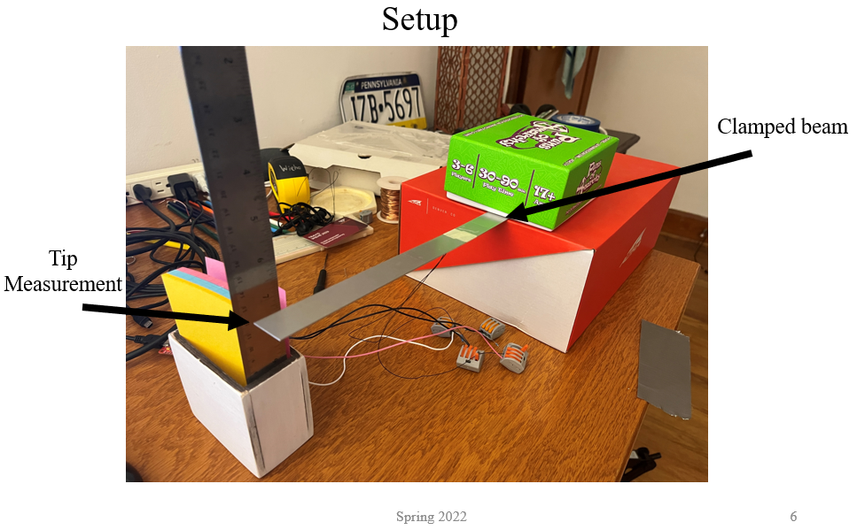
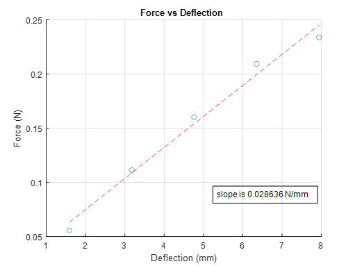
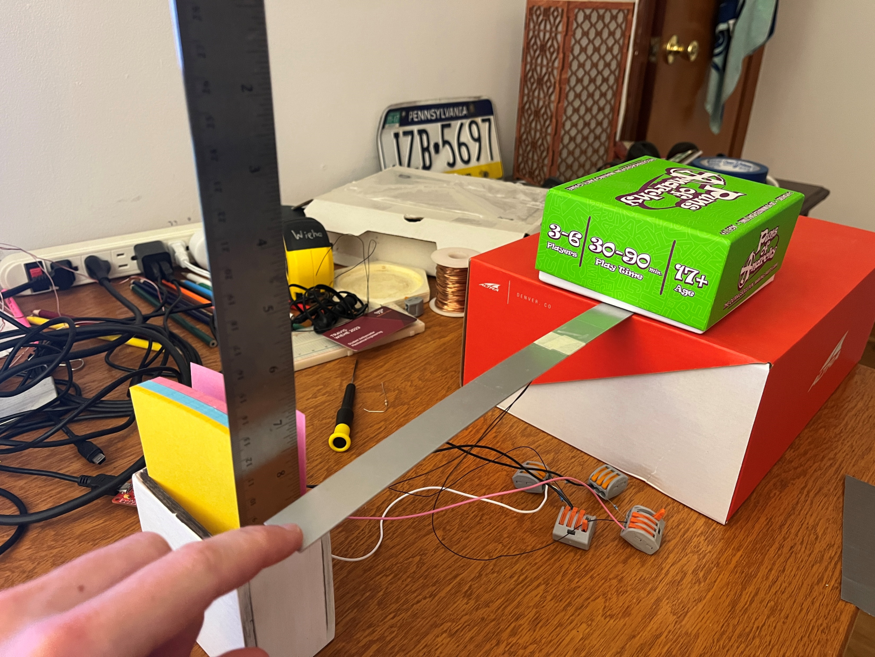
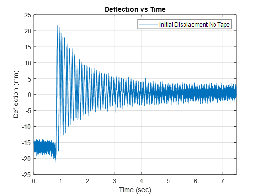
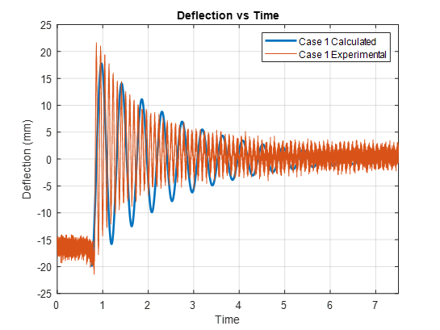

|
|
||
|---|---|---|
| The goal of the project was to perform beam vibration measurements, plot them over time, and compare them to the theoricial results. I placed a strain gauge on a metal ruler and was able to strain at a given time in the beam. Below is my experimental setup.  Using this setup I placed different amounts of coins on the end of the beam and measured the displacment. From this I was able to calculate the beam stiffness  Using the stiffness coefficient I could do some dynamic testing with the beam. By placing my finger on the end of the beam and pushing down I created some initial displacment in the tip of the beam.  When I released my finger the beam vibrated up and down as I recorded the strain data. This strain data was then converted into tip position data that is seen below.  This data was them compared to the mechanical vibrations equations for a beam. The data was a close match and validated the theoricial equations and the experimental results.  |